|
 |
 |
Puntos de
Inflexión Ecológica
- Cómo funcionan?
- Transformando círculos viciosos a círculos virtuosos
- Ingredientes para el éxito
- Elaboren sus propios Puntos de Inflexión Ecológica
Historias por Región
Historias por Tema
- Agricultura
- Agua y Cuencas
- Bosques
- Ecosistemas Urbanos
- Educación
- Energía
- Negocios
- Pesquerías
- Salud Pública
Videos Cortos
- Salvando un arrecife coral y una pesquería
(Filipinas) - Revitalizando vecindades urbanas con jardines comunitarios
(Nueva York) - Revirtiendo la deforestación tropical con bosques comunitarios
(Thailandia) - Rellenando aguas subterráneas con captación pluvial
(Rajastán, India) - Escapando la trampa de pesticidas
(India)
Explicando el Éxito
- Salvando un arrecife coral y una pesquería
(Filipinas) - Revitalizando vecindades urbanas con jardines comunitarios
(Nueva York) - Revirtiendo la deforestación tropical con bosques comunitarios
(Thailandia) - Rellenando aguas subterráneas con captación pluvial
(Rajastán, India) - Escapando la trampa de pesticidas
(India)

Ecología Humana: Presenta los principios de la ecología humana que sirven de fundamento a los Puntos de Inflexión Ecológica
EUA - California (Oakland) - Abarrotes del Pueblo: Suministrando Alimento Saludable a Vecindades Pobres
- Breve: Una tienda de abarrotes móvil trae alimentos frescos a pobres barrios de "desierto alimentario".
- Lea la historia detallada
- Fotos tomadas por Amanda Suutari - Todas las fotos están disponibles para descargarse gratis; favor de atribuir a la fotógrafa y al sitio de Internet.
- Pulse sobre la foto para ver los detalles.

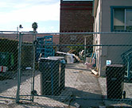
West Oakland scene

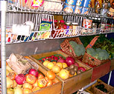
Fresh produce

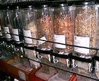
Dried goods

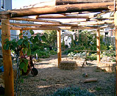
The 55th Street Garden

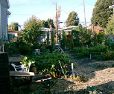
Once a vacant lot

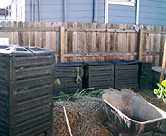
Compost bins

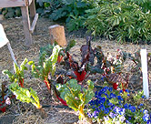
Swiss chard and pansies

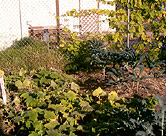
Kale and squash

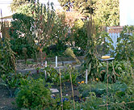
Various crops

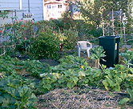
Straw mulch

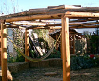
Communal space

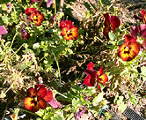
Brightly coloured pansies

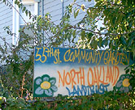
Colourful painted sign

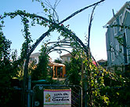
Entrance of garden

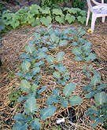
Young broccoli

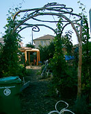
Views of garden entrance

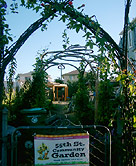
Visitors welcome

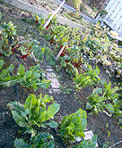
Swiss chard

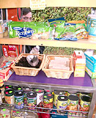
The Mobile Market

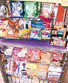
The Mobile Market

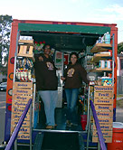
PG Staff members